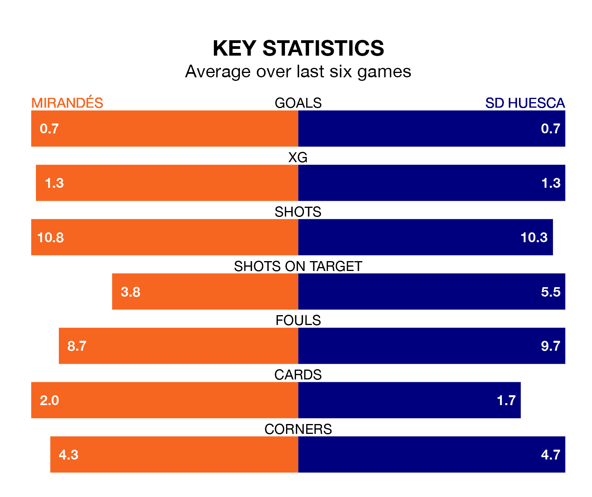

Mirandés host SD Huesca on Monday at Estadio Municipal de Anduva in the Segunda División.
In their last league match, on February 17, Mirandés lost to RCD Espanyol 3-0 away.
Huesca drew, 0-0 at home against SD Amorebieta on February 18.
In the last 10 years, Mirandés and Huesca have played each other on 12 occasions. Mirandés won four of them, Huesca five, and they drew three times.
On average, Mirandés scored 0.8 goals and Huesca 1.3 in those matches.
Their last meeting was on September 3, when they played out a 1-1 draw.
With 20 goals in 27 games so far this season, Huesca are the league's joint-second-lowest scorers with 0.7 goals per game. But they are conceding fewer than average too, letting in 22 goals at a rate of 0.8 per game.
Mirandés, meanwhile, are above average scorers, with 1.2 goals per game, compared to a league average of 1.1. They have conceded 1.3 goals per game.
In Álvaro Fernández, the visitors can rely on one of the league's safest pair of hands. He has kept 11 clean sheets in his 27 appearances this season, and only two other 'keepers – Leganés's Diego Conde and CD Tenerife's Juan Soriano Oropesa – have been able to prevent the opposition scoring on more occasions in the Segunda División.
In the home team's net, Ramón Juan Ramírez has seven clean sheets in 20 games. He has conceded a goal every 90 minutes, 40% more often than the 122 minutes between goals for Fernández Llorente.
Huesca are 18th in the table after 27 games, of which they have won six and drawn 11, earning 29 points.
Mirandés are three places ahead of Huesca in 15th, with eight wins and nine draws putting them on 33 points.
Mirandés are in disappointing form in the Segunda División, with one win and two draws from their last six games.
With a win and four draws over that period, the away side's form is slightly better – they have taken seven points from 18, compared to the hosts' five.
Monday's match will be refereed by Manuel Jesús Orellana Cid, who has taken charge of 14 Segunda División games so far this season, issuing no red cards and booking 69 players. He has awarded four penalties.
The last Mirandés game Orellana Cid refereed was a 2-2 away draw with CD Eldense on November 19. His last Huesca match was their 1-0 loss away at FC Andorra on December 3.
Updated: 10:08 (UTC), 23/02/24